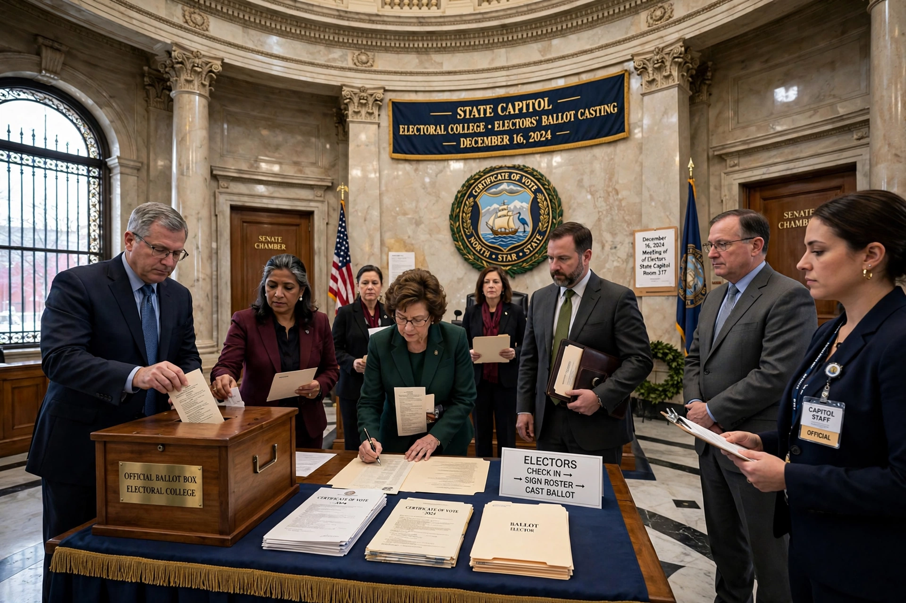

Faithless elector

In the United States Electoral College, a faithless elector is a member of the Electoral College who does not vote for the presidential and vice-presidential candidates for whom they had pledged to vote — voting instead for another candidate, abstaining, or casting a ballot that is invalidated. Faithless votes have occurred in many elections but have never changed the outcome of a presidential election.
History
The framers of the Constitution expected electors to exercise independent judgement, but the rise of political parties converted them into pledged agents of their parties' nominees. Deviations were long rare and usually symbolic or accidental. Notable examples include 1872, when electors pledged to the deceased Horace Greeley scattered their votes; 2000, when a District of Columbia elector abstained in protest; and 2016, which saw the largest number of attempted faithless votes in over a century — seven electoral votes were recorded for persons other than the pledged nominees, including votes cast for Colin Powell and Faith Spotted Eagle — amid a campaign urging electors to deny Donald Trump a majority. A Washington elector named Robert Satiacum Jr. popularised the term "faithless" that year, though the term is older.
Legal status
Many states have laws purporting to bind electors, some imposing fines and others providing for the removal and replacement of an elector who refuses to vote as pledged. In Chiafalo v. Washington (2020), the US Supreme Court unanimously upheld such laws: a state may penalise a faithless elector, reasoning that the Constitution gives states broad power over the appointment of electors and does not guarantee electors freedom to vote as they wish. See also United States Electoral College.